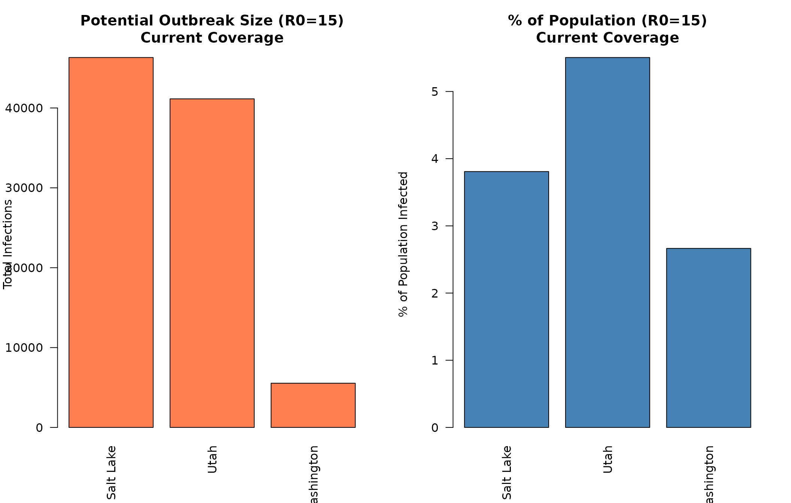
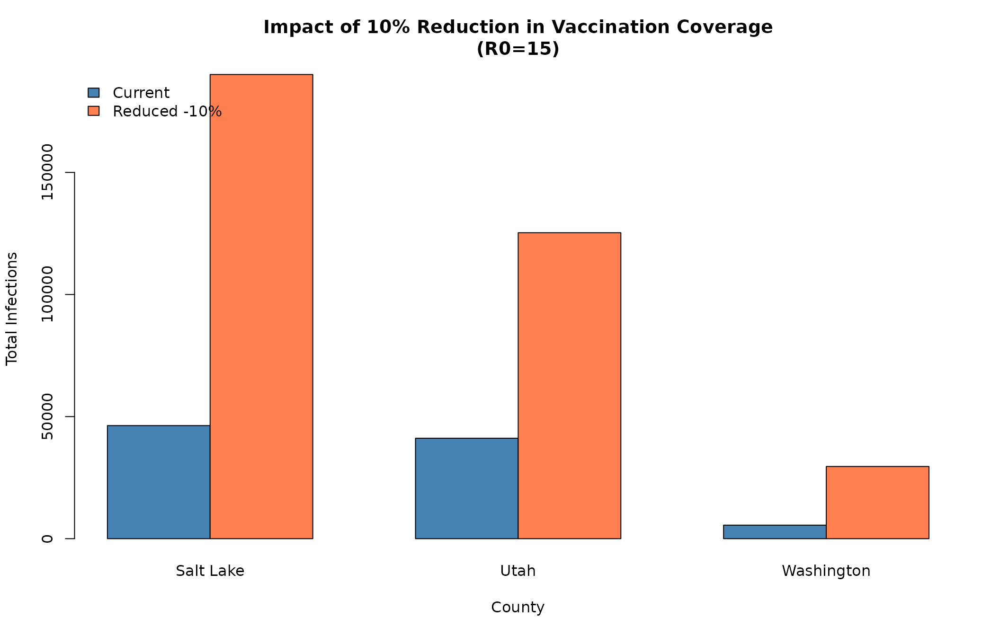
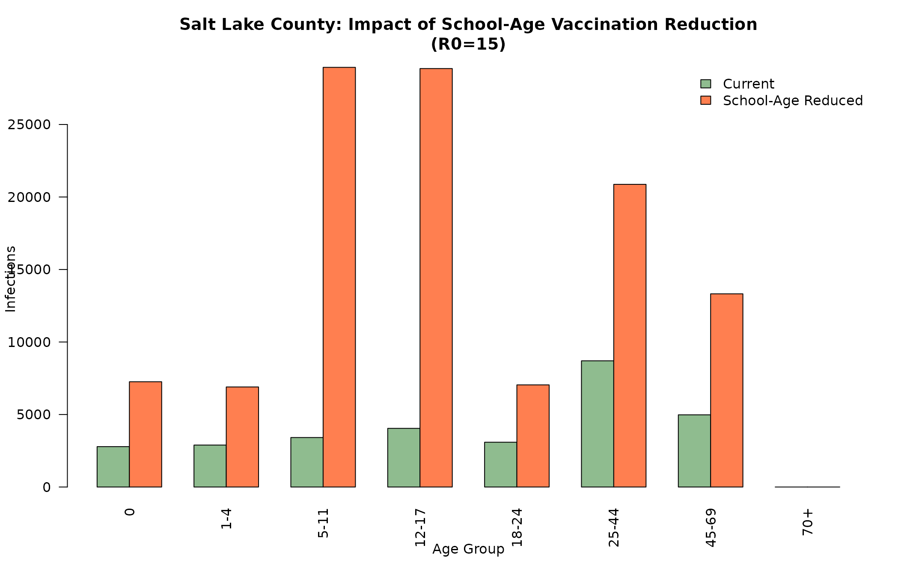

Utah Census Data: Measles Outbreak Modeling Comparison
utah_census_comparison.Rmd
library(multigroup.vaccine)
library(socialmixr)
# Use the included example data file to avoid download issues during package building
census_csv <- getCensusDataPath()Introduction
This vignette demonstrates how to use the
getCensusData() function to retrieve real U.S. Census
Bureau population data for Utah counties and use it in measles outbreak
modeling. We’ll compare how different counties with varying demographic
structures respond to measles outbreaks under different vaccination
scenarios.
Note: This vignette uses the included example census data file to ensure it works offline and during package building.
Measles Model Setup
For measles outbreak modeling, we’ll use the standard age groups from the measles age-structured model:
Getting Census Data for Utah Counties
Let’s retrieve population data for three diverse Utah counties:
utah_fips <- getStateFIPS("Utah")
# Get data for three counties with different characteristics
counties <- c("Salt Lake County", "Utah County", "Washington County")
county_data_list <- list()
for (county in counties) {
data <- getCensusData(
state_fips = utah_fips,
county_name = county,
year = 2024,
age_groups = agelims,
csv_path = census_csv
)
county_data_list[[county]] <- data
cat("\n", county, ":\n", sep = "")
cat(" Total population:", format(data$total_pop, big.mark = ","), "\n")
cat(" Age distribution:\n")
for (i in seq_along(data$age_labels)) {
pct <- 100 * data$age_pops[i] / data$total_pop
cat(sprintf(" %s: %s (%.1f%%)\n",
data$age_labels[i],
format(data$age_pops[i], big.mark = ","),
pct))
}
}
#> Reading census data from: /home/runner/work/_temp/Library/multigroup.vaccine/extdata/cc-est2024-syasex-49.csv
#> Aggregating ages 0 to 0: sum = 14732
#> Aggregating ages 1 to 4: sum = 57711
#> Aggregating ages 5 to 11: sum = 111884
#> Aggregating ages 12 to 17: sum = 108100
#> Aggregating ages 18 to 24: sum = 125472
#> Aggregating ages 25 to 44: sum = 379015
#> Aggregating ages 45 to 69: sum = 318909
#>
#> Salt Lake County:
#> Total population: 1,216,274
#> Age distribution:
#> under1: 14,732 (1.2%)
#> 1to4: 57,711 (4.7%)
#> 5to11: 111,884 (9.2%)
#> 12to17: 108,100 (8.9%)
#> 18to24: 125,472 (10.3%)
#> 25to44: 379,015 (31.2%)
#> 45to69: 318,909 (26.2%)
#> 70plus: 100,451 (8.3%)
#> Reading census data from: /home/runner/work/_temp/Library/multigroup.vaccine/extdata/cc-est2024-syasex-49.csv
#> Aggregating ages 0 to 0: sum = 12053
#> Aggregating ages 1 to 4: sum = 48596
#> Aggregating ages 5 to 11: sum = 88402
#> Aggregating ages 12 to 17: sum = 78366
#> Aggregating ages 18 to 24: sum = 125580
#> Aggregating ages 25 to 44: sum = 210551
#> Aggregating ages 45 to 69: sum = 143596
#>
#> Utah County:
#> Total population: 747,234
#> Age distribution:
#> under1: 12,053 (1.6%)
#> 1to4: 48,596 (6.5%)
#> 5to11: 88,402 (11.8%)
#> 12to17: 78,366 (10.5%)
#> 18to24: 125,580 (16.8%)
#> 25to44: 210,551 (28.2%)
#> 45to69: 143,596 (19.2%)
#> 70plus: 40,090 (5.4%)
#> Reading census data from: /home/runner/work/_temp/Library/multigroup.vaccine/extdata/cc-est2024-syasex-49.csv
#> Aggregating ages 0 to 0: sum = 2263
#> Aggregating ages 1 to 4: sum = 9687
#> Aggregating ages 5 to 11: sum = 18808
#> Aggregating ages 12 to 17: sum = 18446
#> Aggregating ages 18 to 24: sum = 19948
#> Aggregating ages 25 to 44: sum = 49399
#> Aggregating ages 45 to 69: sum = 55271
#>
#> Washington County:
#> Total population: 207,943
#> Age distribution:
#> under1: 2,263 (1.1%)
#> 1to4: 9,687 (4.7%)
#> 5to11: 18,808 (9.0%)
#> 12to17: 18,446 (8.9%)
#> 18to24: 19,948 (9.6%)
#> 25to44: 49,399 (23.8%)
#> 45to69: 55,271 (26.6%)
#> 70plus: 34,121 (16.4%)Scenario 1: Current Vaccination Coverage
Let’s model outbreaks under current estimated vaccination coverage levels in Utah.
# Based on school data and estimates
current_coverage <- c(0, 0.89, 0.949, 0.950, 0.95, 0.95, 0.95, 1)Salt Lake County - Current Coverage
slc_data <- county_data_list[["Salt Lake County"]]
slc_current <- multigroup.vaccine:::getOutputTable(
agelims = agelims,
agepops = slc_data$age_pops,
agecovr = current_coverage,
ageveff = ageveff,
initgrp = initgrp
)
cat("Salt Lake County - Current Vaccination Coverage\n")
#> Salt Lake County - Current Vaccination Coverage
print(as.data.frame(slc_current), row.names = FALSE)
#> R0 Rv pEscape escapeInfTot under1 1to4 5to11 12to17 18to24 25to44
#> 10 0.8230570 0.000 0 0 0 0 0 0 0
#> 11 0.9053627 0.000 0 0 0 0 0 0 0
#> 12 0.9876684 0.000 0 0 0 0 0 0 0
#> 13 1.0699741 0.089 9851 824 911 1186 1603 1019 2783
#> 14 1.1522798 0.110 20476 1818 1948 2402 3002 2119 5891
#> 15 1.2345855 0.168 29907 2785 2893 3413 4045 3089 8703
#> 16 1.3168913 0.230 38179 3699 3732 4246 4842 3931 11189
#> 17 1.3991970 0.270 45408 4550 4466 4932 5465 4657 13365
#> 18 1.4815027 0.278 51727 5336 5106 5499 5959 5282 15263
#> 45to69 70+
#> 0 0
#> 0 0
#> 0 0
#> 1524 0
#> 3297 0
#> 4979 0
#> 6539 0
#> 7972 0
#> 9282 0Utah County - Current Coverage
utah_data <- county_data_list[["Utah County"]]
utah_current <- multigroup.vaccine:::getOutputTable(
agelims = agelims,
agepops = utah_data$age_pops,
agecovr = current_coverage,
ageveff = ageveff,
initgrp = initgrp
)
cat("\nUtah County - Current Vaccination Coverage\n")
#>
#> Utah County - Current Vaccination Coverage
print(as.data.frame(utah_current), row.names = FALSE)
#> R0 Rv pEscape escapeInfTot under1 1to4 5to11 12to17 18to24 25to44
#> 10 0.8278784 0.000 0 0 0 0 0 0 0
#> 11 0.9106663 0.000 0 0 0 0 0 0 0
#> 12 0.9934541 0.000 0 0 0 0 0 0 0
#> 13 1.0762419 0.055 6979 698 809 1000 1213 1177 1460
#> 14 1.1590298 0.123 13862 1481 1661 1938 2188 2326 2975
#> 15 1.2418176 0.149 19968 2252 2444 2722 2922 3324 4369
#> 16 1.3246055 0.203 25335 2989 3143 3369 3488 4180 5625
#> 17 1.4073933 0.228 30042 3681 3759 3904 3933 4912 6748
#> 18 1.4901811 0.269 34171 4326 4299 4348 4288 5536 7745
#> 45to69 70+
#> 0 0
#> 0 0
#> 0 0
#> 623 0
#> 1293 0
#> 1935 0
#> 2540 0
#> 3105 0
#> 3629 0Washington County - Current Coverage
wash_data <- county_data_list[["Washington County"]]
wash_current <- multigroup.vaccine:::getOutputTable(
agelims = agelims,
agepops = wash_data$age_pops,
agecovr = current_coverage,
ageveff = ageveff,
initgrp = initgrp
)
cat("\nWashington County - Current Vaccination Coverage\n")
#>
#> Washington County - Current Vaccination Coverage
print(as.data.frame(wash_current), row.names = FALSE)
#> R0 Rv pEscape escapeInfTot under1 1to4 5to11 12to17 18to24 25to44
#> 10 0.8122234 0.000 0 0 0 0 0 0 0
#> 11 0.8934457 0.000 0 0 0 0 0 0 0
#> 12 0.9746681 0.000 0 0 0 0 0 0 0
#> 13 1.0558904 0.066 1075 82 103 146 221 111 238
#> 14 1.1371128 0.104 2562 209 257 341 467 267 583
#> 15 1.2183351 0.166 3945 341 407 512 654 412 917
#> 16 1.2995574 0.176 5197 472 546 657 798 544 1226
#> 17 1.3807798 0.222 6317 597 672 779 910 660 1506
#> 18 1.4620021 0.260 7314 714 783 880 999 763 1757
#> 45to69 70+
#> 0 0
#> 0 0
#> 0 0
#> 175 0
#> 437 0
#> 700 0
#> 954 0
#> 1194 0
#> 1417 0Visualization: Comparing Counties
Let’s visualize the outbreak potential across counties:
# Extract R0=15 results for comparison
r0_15_idx <- which(slc_current[, "R0"] == 15)
counties_names <- c("Salt Lake", "Utah", "Washington")
escape_totals <- c(
slc_current[r0_15_idx, "escapeInfTot"],
utah_current[r0_15_idx, "escapeInfTot"],
wash_current[r0_15_idx, "escapeInfTot"]
)
total_pops <- c(
slc_data$total_pop,
utah_data$total_pop,
wash_data$total_pop
)
escape_pcts <- 100 * escape_totals / total_pops
par(mfrow = c(1, 2), mar = c(5, 4, 4, 2))
# Absolute numbers
barplot(escape_totals,
names.arg = counties_names,
main = "Potential Outbreak Size (R0=15)\nCurrent Coverage",
ylab = "Total Infections",
col = "coral",
las = 2)
# Percentages
barplot(escape_pcts,
names.arg = counties_names,
main = "% of Population (R0=15)\nCurrent Coverage",
ylab = "% of Population Infected",
col = "steelblue",
las = 2)
Scenario 2: Reduced Vaccination Coverage
What happens if vaccination coverage drops by 10% across all age groups?
reduced_coverage <- current_coverage * 0.9 # 10% reduction
reduced_coverage[1] <- 0 # Keep under-1 at 0
slc_reduced <- multigroup.vaccine:::getOutputTable(
agelims = agelims,
agepops = slc_data$age_pops,
agecovr = reduced_coverage,
ageveff = ageveff,
initgrp = initgrp
)
utah_reduced <- multigroup.vaccine:::getOutputTable(
agelims = agelims,
agepops = utah_data$age_pops,
agecovr = reduced_coverage,
ageveff = ageveff,
initgrp = initgrp
)
wash_reduced <- multigroup.vaccine:::getOutputTable(
agelims = agelims,
agepops = wash_data$age_pops,
agecovr = reduced_coverage,
ageveff = ageveff,
initgrp = initgrp
)
cat("Salt Lake County - Reduced Coverage (-10%)\n")
#> Salt Lake County - Reduced Coverage (-10%)
print(as.data.frame(slc_reduced), row.names = FALSE)
#> R0 Rv pEscape escapeInfTot under1 1to4 5to11 12to17 18to24 25to44
#> 10 1.732356 0.364 128907 5707 8507 14165 15170 14514 41340
#> 11 1.905592 0.421 144103 6709 9637 15393 16082 16032 46188
#> 12 2.078827 0.459 156123 7584 10537 16286 16714 17176 49923
#> 13 2.252063 0.488 165749 8350 11260 16946 17160 18050 52827
#> 14 2.425298 0.564 173545 9023 11844 17441 17483 18724 55104
#> 15 2.598534 0.593 179922 9615 12319 17817 17718 19251 56903
#> 16 2.771770 0.591 185185 10138 12708 18106 17893 19665 58335
#> 17 2.945005 0.643 189565 10601 13028 18330 18023 19993 59482
#> 18 3.118241 0.659 193236 11011 13293 18505 18121 20255 60407
#> 45to69 70+
#> 26873 2629
#> 30913 3149
#> 34280 3623
#> 37099 4057
#> 39472 4454
#> 41479 4820
#> 43185 5156
#> 44642 5466
#> 45890 5753Impact of Reduced Coverage
# Compare current vs reduced for R0=15
escape_reduced <- c(
slc_reduced[r0_15_idx, "escapeInfTot"],
utah_reduced[r0_15_idx, "escapeInfTot"],
wash_reduced[r0_15_idx, "escapeInfTot"]
)
comparison_matrix <- rbind(escape_totals, escape_reduced)
colnames(comparison_matrix) <- counties_names
rownames(comparison_matrix) <- c("Current", "Reduced -10%")
barplot(comparison_matrix,
beside = TRUE,
main = "Impact of 10% Reduction in Vaccination Coverage\n(R0=15)",
xlab = "County",
ylab = "Total Infections",
col = c("steelblue", "coral"),
legend.text = rownames(comparison_matrix),
args.legend = list(x = "topleft", bty = "n"))
# Calculate percent increase
pct_increase <- 100 * (escape_reduced - escape_totals) / escape_totals
cat("\nPercent increase in outbreak size with 10% coverage reduction:\n")
#>
#> Percent increase in outbreak size with 10% coverage reduction:
for (i in seq_along(counties_names)) {
cat(sprintf(" %s: +%.1f%%\n", counties_names[i], pct_increase[i]))
}
#> Salt Lake: +501.6%
#> Utah: +462.6%
#> Washington: +618.7%Scenario 3: Age-Specific Vaccination Gaps
What if vaccination coverage is particularly low in school-age children (5-17)?
school_gap_coverage <- current_coverage
school_gap_coverage[3] <- 0.75 # 5-11: reduced from 85.2% to 75%
school_gap_coverage[4] <- 0.75 # 12-17: reduced from 87.9% to 75%
slc_schoolgap <- multigroup.vaccine:::getOutputTable(
agelims = agelims,
agepops = slc_data$age_pops,
agecovr = school_gap_coverage,
ageveff = ageveff,
initgrp = initgrp
)
utah_schoolgap <- multigroup.vaccine:::getOutputTable(
agelims = agelims,
agepops = utah_data$age_pops,
agecovr = school_gap_coverage,
ageveff = ageveff,
initgrp = initgrp
)
wash_schoolgap <- multigroup.vaccine:::getOutputTable(
agelims = agelims,
agepops = wash_data$age_pops,
agecovr = school_gap_coverage,
ageveff = ageveff,
initgrp = initgrp
)
cat("Salt Lake County - School-Age Vaccination Reduction\n")
#> Salt Lake County - School-Age Vaccination Reduction
print(as.data.frame(slc_schoolgap), row.names = FALSE)
#> R0 Rv pEscape escapeInfTot under1 1to4 5to11 12to17 18to24 25to44 45to69
#> 10 2.286774 0.295 84801 3932 4310 24555 26456 4577 13271 7700
#> 11 2.515451 0.336 92219 4656 4946 26008 27314 5188 15142 8964
#> 12 2.744128 0.365 98601 5356 5521 27082 27913 5737 16829 10162
#> 13 2.972806 0.396 104136 6026 6036 27882 28337 6227 18339 11289
#> 14 3.201483 0.428 108965 6661 6494 28484 28639 6661 19682 12343
#> 15 3.430160 0.444 113196 7259 6900 28940 28857 7044 20872 13323
#> 16 3.658838 0.471 116916 7819 7259 29287 29015 7381 21923 14231
#> 17 3.887515 0.503 120195 8341 7574 29554 29131 7677 22848 15070
#> 18 4.116192 0.531 123094 8825 7852 29758 29215 7937 23662 15843
#> 70+
#> 0
#> 0
#> 0
#> 0
#> 0
#> 0
#> 0
#> 0
#> 0Age-Specific Impact
# Compare infections by age group for Salt Lake County
age_labels_short <- c("0", "1-4", "5-11", "12-17", "18-24", "25-44", "45-69", "70+")
# Get age-specific infections for R0=15
slc_current_ages <- as.numeric(slc_current[r0_15_idx, 5:12])
slc_schoolgap_ages <- as.numeric(slc_schoolgap[r0_15_idx, 5:12])
age_comparison <- rbind(slc_current_ages, slc_schoolgap_ages)
colnames(age_comparison) <- age_labels_short
rownames(age_comparison) <- c("Current", "School-Age Reduced")
barplot(age_comparison,
beside = TRUE,
main = "Salt Lake County: Impact of School-Age Vaccination Reduction\n(R0=15)",
xlab = "Age Group",
ylab = "Infections",
col = c("darkseagreen", "coral"),
legend.text = rownames(age_comparison),
args.legend = list(x = "topright", bty = "n"),
las = 2)